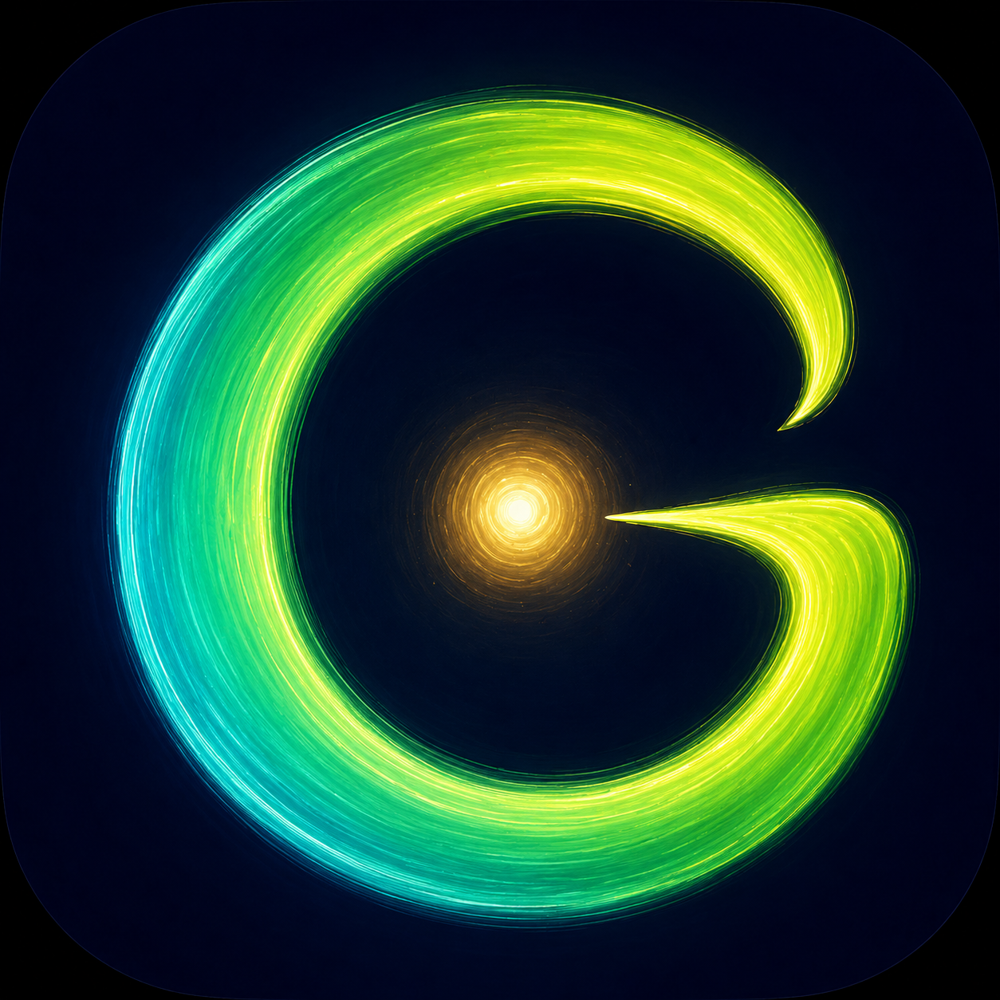

Support Glance
Glance is completely free for personal & non-commercial use, built solo. If it saves you time, a small tip helps keep it actively developed.
Any words of encouragement or feature suggestions are always welcome.
Glance 후원하기
Glance는 개인·비상업적 용도로는 조건 없이 완전히 무료이며, 혼자 개발하고 있습니다. Glance가 도움이 되셨다면, 작은 후원이 꾸준한 개발에 큰 힘이 됩니다.
따뜻한 응원 한마디나 바라는 기능이 있다면 언제든 편하게 남겨주세요!
Every bit of support is optional and appreciated. Thank you for using Glance. 🙌
← Back to Glance
후원은 어디까지나 자발적입니다. Glance를 사용해주셔서 감사합니다. 🙌
← Glance로 돌아가기